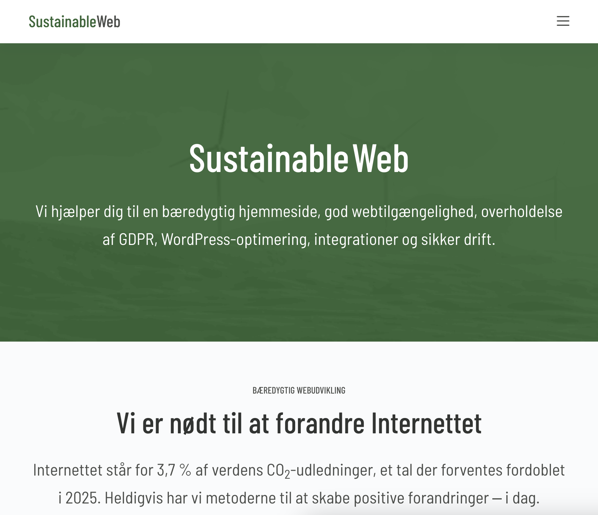

Denne side har til formål at oplyse dig om bæredygtigt webdesign og dine muligheder herom, i forbindelse med din webudvikling.
Du vil blive introduceret for bæredygtigt webdesign, hvorfor man skal webdesigne bæredygtigt samt virksomheden SustainableWeb, der tilbyder lige netop dette.
Klimaforandringerne er faktiske og gør, at vi må anvende energi med omtanke. Dette gælder også på nettet. Webdesign er en stor del af webudvikling, og tro det eller ej, men der er fordele og ulemper ved webdesign. I 2019 stod internettet for 3,7% af verdens CO2-udledninger, og man forventer samtidigt, at dette tal vil være oppe på 14% i år 2040.
Men frygt ej - der er håb forude!
Vi kan nemlig alle gøre en indsats allerede i dag, ved at tænke over hvordan vi udvikler og designer vores websites. Der er metoder hvorpå man kan forbedre webdesignets bæredygtighed, og dette kan du læse meget mere om i de løbende afsnit!
Men hvorfor er det egentlig helt præcist, at vi skal gøre brug af bæredygtigt webdesign? Jo, det skal jeg fortælle dig.
Bæredygtig webudvikling og -design er essentiel i forsøget på at skrue ned for hjemmesiders CO2-udledning og dermed skrue ned for den belastning som internettet har på klimaet. Samtidigt kommer vi altså længst med det bæredygtige webdesign, hvis vi tænker det med ind i vores arbejde så tidligt som muligt. Heldigvis behøver det ikke være på bekostning af hverken udseende eller brugervenlighed på hjemmesiden.
Du er fremtidens multimediedesigner og derfor er det vigtigt, at lige netop du, forstår vigtigheden i at arbejde med bæredygtigt webudvikling og -design, og sætter en ære i at arbejde så bæredygtigt som muligt, når du webudvikler.

Virksomheden SustainableWeb drives af webudvikler og konsulent Bjarne Oldrup og forretningsudvikler og konsulent Lars Nør Bengtsson.
Hos SustainableWeb tilbyder de at hjælpe dig med at gøre din hjemmeside mere bæredygtig. De omformer dine filformater, så de er mindre forurenende og vigtigst af alt, giver de dig indblik i processen og fortæller dig hvilke metoder de anvender. Deres hjemmesider forurener mindre end 90% af gennemsnittet.
På deres hjemmeside kan du læse om en case hvor de giver indblik i forbedringen på en given hjemmeside, som trængte til et eftersyn. Det er en god mulighed for at få en forståelse for de metoder, der bliver brugt.
Sidst, men absolut ikke mindst, deler de en række tips og tricks til hvordan du selv kan gøre dine hjemmesider mere bæredygtige, hvad end det gælder lyd, billeder, videoer, fonte, WordPress og meget andet.
Til en start kan du sætte din hjemmeside ind i Website Carbon Calculator. Den fortæller dig i procent hvor ‘ren’ din hjemmeside er i forhold til alle andre tidligere testede hjemmesider. På den måde kan du finde ud af hvor bæredygtig din hjemmeside er allerede nu.
Har du eksempelvis en video på din hjemmeside, som er i MP3-format, kan du omdanne formatet til et nyere og bedre alternativ, såsom AAC og Opus.
Disse formater giver samme lydkvalitet, og samtidigt giver de en bedre brugeroplevelse.
Ifølge SustainableWeb udgør billeder på din hjemmeside omkring 60-80% af den mængde data, der skal transmitteres over internettet.
Du kan reducere billedernes filstørrelser med omkring 50% uden tab af billedekvalitet og samtidigt nedbringe klimabelastningen i samme grad,
OG tilmed forbedre brugeroplevelsen.
På SustainableWebs hjemmeside kan du læse artikler om hvor og hvordan du præcist kan forbedre din hjemmeside.